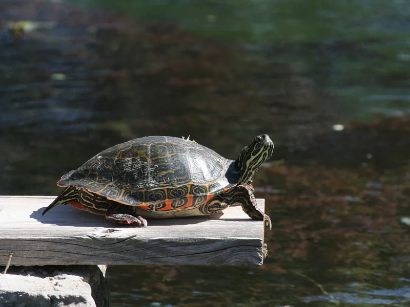

テキサス州リオグランデ川水系に生息するクーター属の中型種。コウキバラガメより小ぶりで、草食傾向が強い。60〜90cmの水槽から管理できる、クーター類の入門的中級種。

1年後の甲長は12〜16cm程度。テキサス〜ニューメキシコのリオグランデ川水系の流れのある河川に生きる種で、水流のある環境と広い遊泳スペースで活発に泳ぐ。草食傾向が強く、成体になるほど水草・藻類・葉物野菜が主食になりやすい。日光浴も強く好む。
10年後は甲長28〜35cm、重さ2〜5kg程度が多い。コウキバラガメやペニンシュラクーターと同等の大型化をするため、60〜90cm以上の水槽または屋外池への移行が視野に入る。20〜30年の寿命があり、成体サイズと草食管理を最初から計画に含めることが重要。
リオグランデクーターは草食傾向の強い穏やかな種だが、成体は30〜35cmを超える場合があり大型水槽が必須。「草食・穏やか＝管理が楽」というイメージと実際の成体サイズのギャップに後から気づくケースが報告されている。購入前から成体サイズに対応した60〜90cm以上の水槽・屋外池の計画を立てておくことが安定飼育につながりやすい。
テキサス州〜ニューメキシコ州南部のリオグランデ川・ペコス川水系の流れのある河川に分布。流水環境への適応が強く、日光浴も好む。成体は水草・藻類・落ち葉を主食とする草食傾向が強い種。
流水を好む傾向があるため、フィルターの吐出口で適度な水流を確保することを推奨します。草食傾向が強いため、水槽内にアナカリス等の水草を入れると本種の行動観察が豊かになります。
← 横にスクロールできます
| 種名 | 甲長 | 難易度 | 必要水槽 | 特徴 |
|---|---|---|---|---|
| リオグランデクーター このページ | 20〜28cm | 中級 | 60〜90cm | 本種・クーター中型 |
| コウキバラガメ | 25〜40cm | 中級 | 90〜120cm | 最大級クーター |
| ペニンシュラクーター | 25〜37cm | 中級 | 90cm〜 | フロリダ固有 |
| カンバーランドスライダー | 18〜28cm | 入門 | 60〜90cm | スライダー・雑食 |